Data Analysis
In this tutorial, we will show how to run the following analysis: build genome reference, raw data QC, pre-processing, coverage analysis, transgene detection, consensus inference and variation detection, . The general analysis workflow can be illustrated as below:

We will show each step one by one in this tutorial. All these steps can be concatenated together using OmicScript to be a standard pipeline and generate report using ExportToReport function.
Build plasmid Reference and Gene Model
For transgene analysis, the user has to build a genome reference for the plasmid sequence. To build a reference library, use NGS | Build | Build Reference Library to build the reference from a FASTA file:

Input any name for Reference Library ID:

If the user also has the gene model files (GTF or GFF) for the plasmid, a gene model can also be built in NGS | Build | Build Gene Model. It is optional for transgene analysis. With a gene model, the genome browser can show the transgene integration site along with gene annotation on the genome. The mutation analysis can also use a gene model to assess the impact of the variation (in order to check whether it is causing amino acid changes or not).

Once built, the user can check how the reference and gene model look like in the Genome Browser:
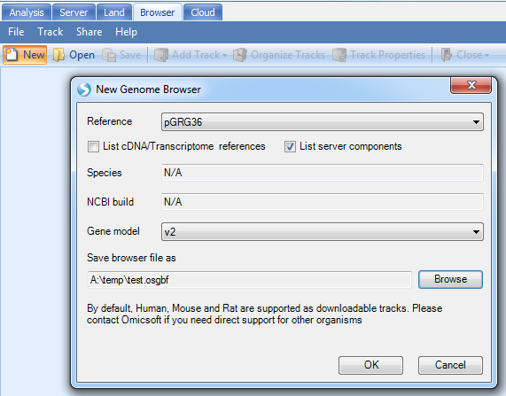
Note
If you do not see your new reference in the drop-down menu, de-select the option "List Server components". This is because the reference you have build that is stored in your local cache, not the server. If you wish to perform this tutorial, please connect to ArrayServer, and create a Server Project before building your reference genome and gene model.
You will get a genome browser view of the plasmid in linear scale:

Raw Data QC
Once user gets raw data from NGS machine, it is best to go through the raw data QC step to check data quality.
Array Studio contains modules for QC of raw data files. The easiest way is to run Raw Data QC Wizard, which scans each file once to calculate all quality statistics such as GC content, per position nucleotide distribution, read length distribution, quality box plot, sequence duplication and K-mer analysis.

Click Add to find all fastq files, and check the QC metrics to run. Optionally, for a faster analysis, the user can choose preview mode to only generate QC on the first one million reads. This is, in most cases, good enough to get an assessment of quality. Leave File format to AUTO and Quality encoding as Automatic to automatically set the correct quality encoding method.

Click Submit to begin the analysis.
The raw data QC returns multiple raw data QC results/reports in Raw Data QC folder:

The basic statistics table contains some important information about your samples, including total Sample #, Minimum and Maximum read length (if pre-filtering has occurred), total Nucleotide #, and GC%. Use this table to confirm any expected values, as well as to get an idea of the overall size of your experiment.
The Sequence length report shows the distribution of read length. For original data from the sequencer, read length should be the same. After the user runs pre-processing such as trimming and adapter stripping, the read lengths will be different. The distribution of sequence length will show the final read length after trimming and stripping.
Base distribution of each raw data file is useful for ensuring that the base distribution is as expected (sometimes can be used to notice adapter sequences if the user is not aware that they are there as well).
Quality BoxPlot shows, for each base pair position in a file, information on the quality scoring at that position. This gives the user an idea of where the quality starts to drop for most reads in a sample. It is useful to compare plots when evaluating sequencing quality of multiple samples.
The K-Mer Analysis module counts the enrichment of every possible 5-mer across the positions of the reads. This analysis identifies whether there is an enrichment of a kmer on a particular region of the read. It can help find overrepresented patterns, such as adapters being read through when inserted fragment is short. In the KMerAnalysis profile view, Y-axis is the percentage of reads (0.001 means 0.1%) that contain each KMer. There is no significant (all less than 1%) enrichment of k-mer in this tutorial dataset.
Alignment
Align to Host
User should then align reads to host genome. At this moment, we provided two CHO reference genomes:
- CriGri.B1.0: the original BGI version
- CriGri.B1.1: based on NCBI, Genome reference "C_griseus_v1.0".

Check "Reads are paired", and specify output name in the Advanced tab. The user can leave all other options as default in general tab. Some companies may require users to specify the output folder too.

The Advanced menu has more options to specify the indel length. By default, it detects deletion up to 1000bp and insertion up to 10bp. However, it is designed for regular human/mouse DNA-Seq samples. For mutation detection in plasmids, it is recommended to decrease the upper limit of deletion length to 10bp. The expected insert size in this dataset is 800bp since the data was simulated based on SRA dataset SRX091184.

It will align to host, CHO reference, and generate NgsData (BAM files) and alignment statistics.
NgsData in ArrayStudio Projects:

Alignment reports summarize the alignment statistics, such as fragment size of paired end reads, # and % of reads uniquely aligned.

In the coverage analysis step, users can further use the NgsData to count the # of reads mapped to each contig, and get coverage report/views at base pair resolution.
Align to Plasmid
Before alignment to plasmid, the user will have to pre-build plasmid genome reference from FASTA files. As mentioned in the previous step, the user has to build a plasmid reference: pGRG36, for this tutorial.

More options can be found under the Advanced tab:

It will align to plasmid reference, and generate NgsData (BAM files) and alignment statistics.
NgsData in ArrayStudio Projects:

Alignment reports:

Coverage analysis on host genome
Quantify Coverage on contigs
Since the CHO genome reference is not yet well defined, there are many contigs from CHO, and the user will get lost by looking at coverage directly. The user can first quantify the coverage on each contig, and get the percentage of mapped reads in each contig.
The NGS | Quantification | Report Gene/Transcript Count function is designed to quantify gene expression from RNA-Seq data. If the input is DNA-Seq data, it will quantify the read counts on each contig/chr:

Choose the host alignment NgsData, and choose expression measurement to be Count; Count fragments instead of reads will count properly paired reads only; EM algorithm will assign reads mapped to multiple contigs based on EM iterations.
It will generate an OmicData with rows for contigs and columns for samples:

The default data object name still contains "Transcript" since it was designed for RNA-Seq. User can always rename it to other names such as AlignToHost.ContigReadCount.
The data values are EM read counts for each contig. User can further convert them to percentages of mapped reads in each contig by using NGS | Inference | Normalize RNA-Seq Data (again, the function was designed for RNA-Seq, but can be applied to DNA-Seq data).

Use the TotalCount method and scale the total count to 1, then the count of reads will be normalized as percentage of reads mapped to each contigs.

In the table, user can right click the header and sort the table column descending. It shows top contigs which have been enriched in the NGS library.
By selecting top contigs, user can create a list of them for filtering purpose in other tables. Right click on List, "Add list from selected rows" and name it "TopContigs":

Summarize Coverage
The NGS | Coverage | Coverage Summary Statistics module can be used to calculate the coverage of the mapping at defined bin resolution or export as a bedgraph file at base pair resolution.

Pick the Host alignment NgsData as Data input.
Exclude multi-reads: Multi reads are considered non-unique (i.e. reads that align to multiple genomic locations with equal or similar numbers of mismatches). Selecting this option will include unique reads only when performing the coverage summarization.
Exclude duplicates: duplicate reads are reads mapped to the exact same location. Duplicated reads are excluded by default in most NGS modules.
The coverage will be summarized in each bin size specified. If user wants to have the basepair resolution coverage, he/she can choose to output bedGraph files.
The output is a table of coverage values in each bin for each sample.

It also generates a histogram of coverage on all contigs. However, there are so many contigs in CHO, it is recommended to use top contigs as a filter to filter the table, then open the histogram plot.
In the View Controller on the right, select the Row tab, then right-click on "Chromosome" and select "Add List Filter". For some tables, it has been set as check box by default. If you do not see "Add list Filter", please change the column to "String Filter". User can also type the following contigs in the String filter in to check contigs:
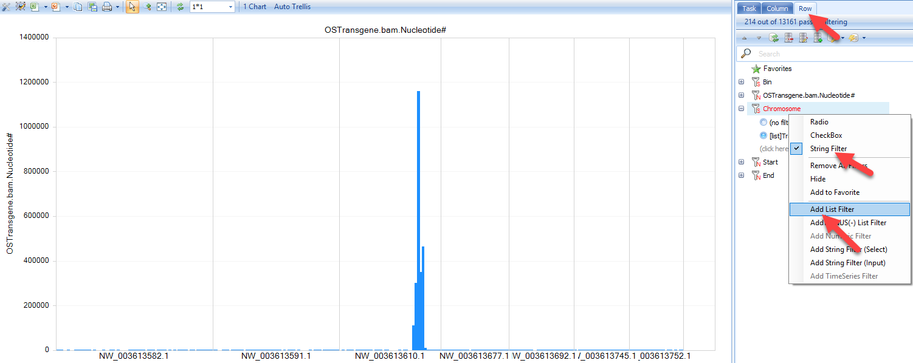
Check coverage at base pair resolution using BedGraph file in Genome Browser
The bedGraph files contain continuous coverage data in track format. It is generated by the coverage analysis and loads much faster in genome browser than loading the actual BAM files.
Steps:
Create new genome browser:
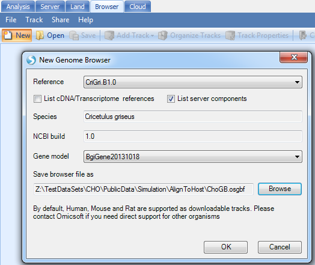
Add Track | Add Track from Server Files | Numeric Tracks | BedGraph file
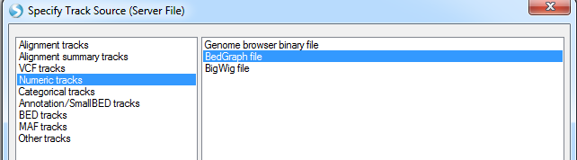
Select the bedgraph files generated in the output folder:

Jump to contigs of interest to browse coverage at base pair resolution:

Integration Detection
Tag Split
If the NGS library fragments are generated from digestion with a cutting enzyme, it may generate random chimeric DNA fragments which results in false positives in transgene detection. If the cutting enzyme relies on short restriction NT sites, it can bring a lot of false positives in the downstream analysis. If we know the restriction NT combinations, users can first split the reads when finding an enzyme cutting site. It can greatly reduce the false positives in transgene detection.
Users can split reads by Tag in the Analysis tab by navigating to NGS | Preprocess | Split by Tag:

Add the sample fastq data from server folder:
-
Input format: choose AUTO and it will check file format automatically
-
Quality encoding: the encoding for quality score; recommend using Automatic.
-
Tag sequence: The sequence tag which will be recognized by restriction enzyme.
-
Minimal sequence length: The read will be thrown again if length < MinLength after split
-
Zip format: no gzip or bzip format.
The program will go over each fastq file and split reads recursively based on the tag:
New fastq.gz files will be generated in the output folder.
Note, it is also possible that there are enzyme sites near the true integration site. These sites will not be detected when running Transgene Detection using split reads.
Transgene Detection
From the raw data (or split read data if Split by Tag has been run), user can start to run transgene detection in NGS | Fusion | Transgene Integration Analysis:
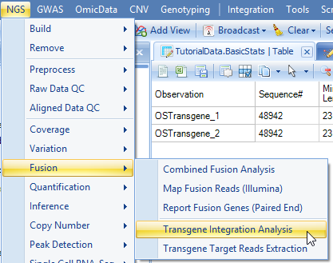
Add data from server folder and follow the following options:
-
Input format: choose AUTO and it will check file format automatically
-
Reads are paired Check box: if the box is checked, read1 and read2 files will be automatically paired based on read names as one sample for integration analysis.
-
Host genome: the host genome to detect integration; Make sure you pick the same host reference as in the previous alignment step.
-
Plasmid genome: the custom plasmid genome built by user.
-
Quality encoding: the encoding for quality score; we recommend using Automatic.
-
Zip format: no gzip or bzip format.
-
Thread number: Number of Threads for each job.
-
Job number: Number of parallel jobs to run.
-
Cut size: the minimum size of read end to be aligned to host or plasmid. For read length > 75 bp, we recommend using 25. If read length is less than 75bp, please use the formula (ReadLength/3).
-
Extension: display the left and right extension length of integration junction sequence in the report; will be used to filter false positives caused by restriction enzyme.
-
Perform consensus analysis for partially aligned reads: If checked, the function will scan reads partilly aligned to plasmid reference, and infer the consensus on soft clipped read sequences. Since the CHO genome is not a complete reference, the consensus analysis for partially aligned reads potentially will find integration sites which are not part of the current CHO genome reference.
-
Minimal clipping: The minimal length of clipping region of the read to be used for consensus analysis
-
Minimal read#: The minmal number of reads to report a integration site from consensus analysis
-
Output folder: Browse to specify the output folder.
In the Advanced tab:

More options:
-
Read Trimming: We recommend the default settings as filtering will typically be done before users get to this step.
-
Mask fuzzy plasmid/host fusion: check this box if user wants to mask regions that are the same in plasmid and host, such as the EASE region in CHO.
-
Exclude fusion if cutting position#: number of cutting position means number of unique reads. The default cut off is one single read support.
-
Misc: generate table land to support big report tables; checking this option will make it easier to share this data with others when complete.
-
Set an output name in ArraySuite project.
Click Send to Queue and it will send the job to run on server.
Once the job finishes, you can update the project with results and will see three NgsData objects and three result tables:

TransgeneReport_PlasmidHost: reports the number of support reads for each transgene integration site for each sample, with information of the integration positions in host and plasmid.

For better characterization of integration site, a column named "Integration Type" is reported, based on the definition in the schematic below:

Example:
TRANS_1140_165663373(--) is an integration site between plasmid position 1141 to CHO NW_003613610.1, with 9 reads (8 unique read sequences) supporting from the this dataset. From integration type, user can tell that plasmid sequence starting 1141 has been integrated after CHO NW_003613610.1 position 3346702.
TRANS_10161_165672719(++) is an integration site between plasmid position 10162 to CHO NW_003613610.1, with 23 reads (19 unique read sequences) supporting from this dataset. From integration type, user can tell that integration of plasmid ends at 10162 and then continues with CHO seqeunce starting from NW_003613610.1 position 3356048.
This data is quite clean and does not have any false positives. Due to the nature of enrichment technology, it is possible to have many false positives introduced, as mentioned in the "Split by Tag" section. If user does not run the transgene detection using fastq files from "Split by Tag" run, user should filter the detection table based on integration junction sequence (such as not containing "CATG" for Targeted Locus Amplification (TLA) datasets, using filter "not catg" in the junction sequence), top contigs, and # of supporting reads. Note that the "Split by Tag" option, while useful to filter out false positives, has the potential to generate false negatives. Users of this tutorial will notice that only one of the two fusions are detected when using the split fastq files. Thus, filtering of false positives should be done on a case-by-case basis, with users defining how many false positives they can tolerate.
For a table with multiple samples, user can get the summary statistics on read counts, such as max of unique reads in any samples, using Table | Columns | Add Columns | Column Summarization | Pick columns and pick summarization method.

TransgeneReport_PlasmidPlasmid: report the number of support reads for each plasmid-to-plasmid integration in each sample, with information of the integration positions in host and plasmid.
Transgene.TransgeneReport_Consensus: report the number of supporting reads from consensus analysis. The direction indicates the location of consensus sequence relative to the plasmid breakpoint. The consensus sequences that are inferred from soft clipped reads should be part of the host (such as CHO) genome. It reports the number of supporting clipped reads and total number of reads (the total coverage) at the breakpoint.

Users can further visualize these integration sites in genome browser based on the NgsData.
Genome Browser Of Transgene Integration
Within the transgene report, right click on the row ID, user will have the option to open a new genome browser:
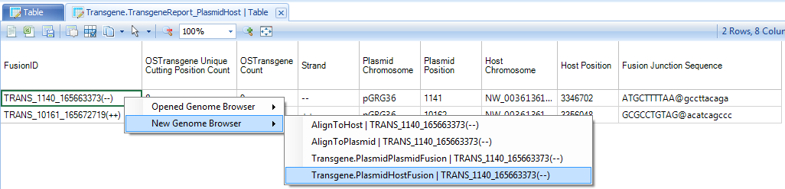
In the example above, right click on TRANS_1140_165663373(--), which it has option to open one of two NgsData objects. Because we are in the plasmid-to-host transgene report table, choose to open the PlasmidHostFusion NgsData object. It will jump to the Genome browser tab, and list available NGS samples to open:
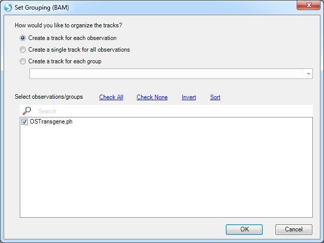
Leave all samples checked and click OK. It will first load the coverage of these supporting reads on two panels, one for plasmid and the other for the host:

User can switch the two panes to have the breakpoints facing each other if necessary.
Note, although we jump to this genome browser based on one transgene integration site, it loads the NgsData containing all integration site supporting reads. If the current region contains multiple integration sites, the genome browser will show all supporting reads for them. User can filter reads by transgene integration ID in the tag filter in genome browser track property:

User can mouse over the sample genome browser track name and it will pop up a tooltip allowing user to display the supporting reads. If the option is grey, please zoom in a little bit to < 200bp region:

Strikethrough of part of the read means the read part is not aligned to the region: Part of the read is aligned to plasmid and the rest of the read is aligned to host.
User can also view the consensus inference in genome browser.

User can filter genome browser alignment by Cigar filter to softclipping reads only, and set minimal length of softclip to be 5 or 10.

From the alignment of softclipped region (read parts with strike), the genome view can help user visually check the consensus seqeunce, starting with ACATCAGCCCACGTTTCCAGTTGATGA. User can use PCR to verify the integration site if the reported consensus sequence is not a part of current host genome sequence.
For more information about genome browser such as sharing a genome browser, please read Omicsoft Genome Browser Tutorial Here is a general key for genome browser:

Variation detection on transgene
Based on the alignment of NGS data to plasmid, we can further detect variation based on consensus mutations calls. To do so, user can use the NGS | Variation | Summarize Variant Data (Omicsoft):
 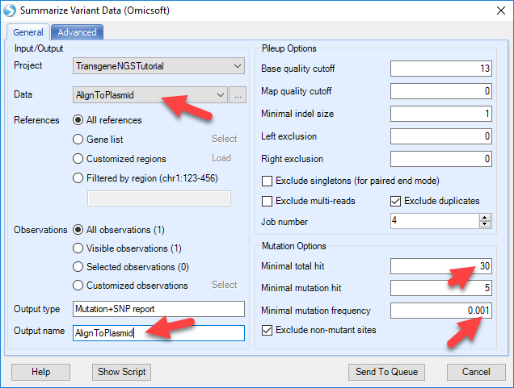
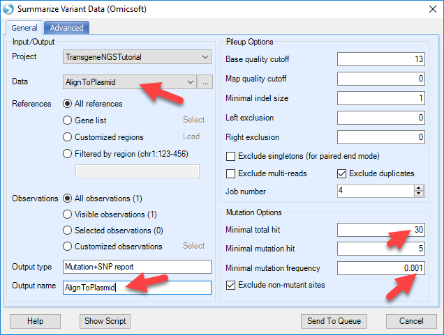
Pick the Data to the NgsData of Plasmid alignment, change the Mutation options. The default mutation options are designed for regular human/mouse studies. For production cell lines with enrichment on transgene regions, user should use high cutoff of position coverage and # of reads supporting mutation, while lowering the cutoff for mutation frequency. In this way, user can detect confident variation, at very low frequency level since there might be hundreds of plasmid integrations to the host.
Also make sure to reduce the "exclude mutation if maximal frequency" option to zero to maximize the sensitivity:

The mutation report will contain three columns (coverage, read frequency and %Plus strand) for each data file, and additional annotation for the mutation, such as positions, reference and mutations:

Sorting this table by the mutation frequency, we can see that the most frequent mutation is MUT00000026. The mutation position on the plasmid is base pair 6930, reference is A and Variation is G, or an A->G. The position is covered by 87 reads and 87*0.6667=58 reads are supporting G in this position.
User can also create a view of Mutation Frequency vs. Coverage by adding a scatterplot view:

Selecting data points will show details for these positions. User can further customize the view using options highlighted in the screenshot below:

Right click on the row names and show the mutation in genome browser with detailed pile-ups from reads:
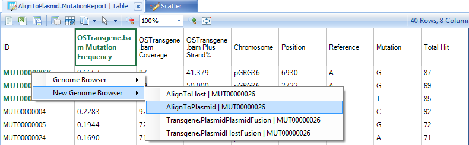
The genome browser might be slow due to high coverage on these regions:

If gene model was built with CDS information for the plasmid, user can add the gene model in the genome browser using:

With the gene model, user can further use NGS | Variation | Annotate Variant Table Report to find Non-Synonymous changes. If any exist, it will also annotate the exact amino acid changes.
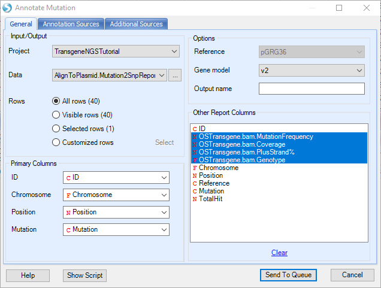
The annotated mutation report will look like below, and can be filtered for certain mutation types (i.e. synonymous) in the View Controller on the right: